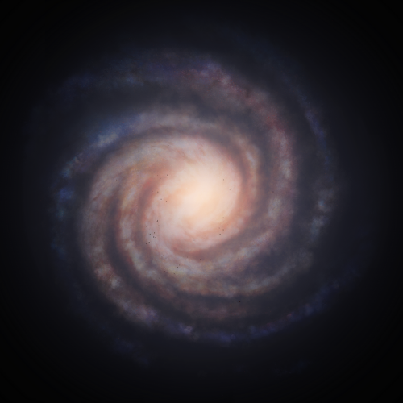

Gludgoea AA-A e25 ABCD 3
< GGG #37 >
.png)
.png)
.png)
.png)
Discovered By: CMDR LBR=Bartels
Date: 3307-11-04
Description:
This Class III GGG boasts bright green and purple clouds, with green covering most of its surface layer. This planet is less than 1,500 lightyears away from the Heart and Soul Nebulae. Its namesake comes from King Rhadamanthus of ancient Greek mythology, whom resided in the Elysian Plains.
Community Name: Rhadamanthus' Eye
| Body Characteristics | |
|---|---|
| Type: | Class III |
| Temperature: | 580.000000 K |
| Mass: | 1,663.3035 M🜨 |
| Gravity: | 12.05 g |
| Radius: | 74,923 km |
| Rotational Period: | 2.3 d |
| Axial Tilt: | 12.2° |
| Rings: | No |
| Moons: | 0 | Region: | Elysian Shore |
| Distance From Sol: | 6,167.02 Ly |
| Distance to Arrival: | 2,393 Ls |
| Orbital Period: | 96.5 d |
| Orbital Inclination: | 8.33° |
| Orbital Eccentricity: | 0.0796 |
| Semi-Major Axis: | 0.07 AU |
| Argument of Periapsis: | 245.60° |
| Hydrogen: | 73.3629% |
| Helium: | 26.63711% |
| Parent Star(s): | A0 Vz, TTS5 Va, F0 Vz, F0 Vz |
